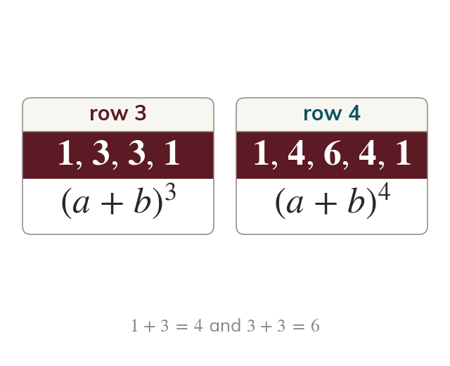
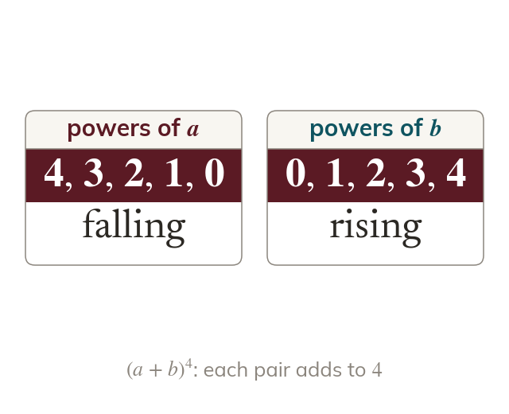
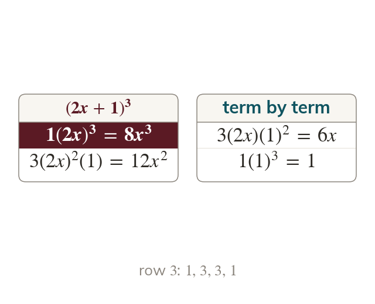
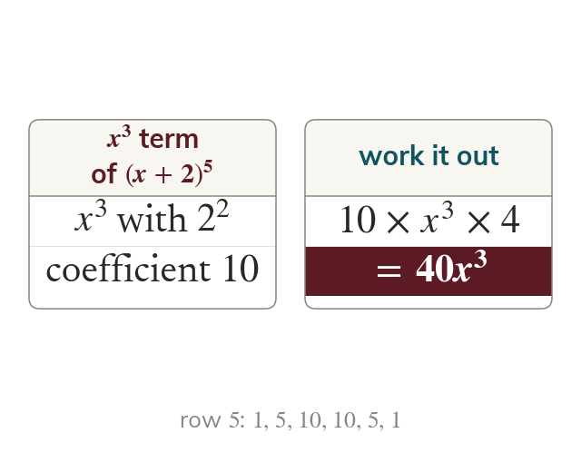

Pascal's triangle
Each entry in Pascal's triangle is the sum of the two above it. Row n gives the coefficients of
Pascal's triangle turns expanding from twenty minutes of multiplying into copying down one row, and the real payoff is being able to pull out the single term you are asked for without expanding any of the others.
Work down the page at your own pace. Write every answer in your book first, then click to check it.
Read each card, then follow the worked examples one step at a time.

Each entry in Pascal's triangle is the sum of the two above it. Row n gives the coefficients of

The expansion of has terms. In each term the powers of a and add to
Pick an answer. If it's wrong, the feedback tells you which mistake it was.
Section The binomial expansion : the expansions with Pascal's triangle, with positive and negative second terms.
Read each card, then follow the worked examples one step at a time.

A compound term is bracketed before it is raised to a power. So is not

A single term needs only its own coefficient and powers. The powers must still add to n.
Pick an answer. If it's wrong, the feedback tells you which mistake it was.
Section The binomial expansion : the first few terms only, and a single coefficient or term.
Finished? Next lesson: 1.7 Manipulating Surds.
For each skill, tap the one that is true for you today. Your Revise pages start with anything you mark Not yet.
Your ratings are saved on this device only.
Log in, then search for a code to practise that skill.